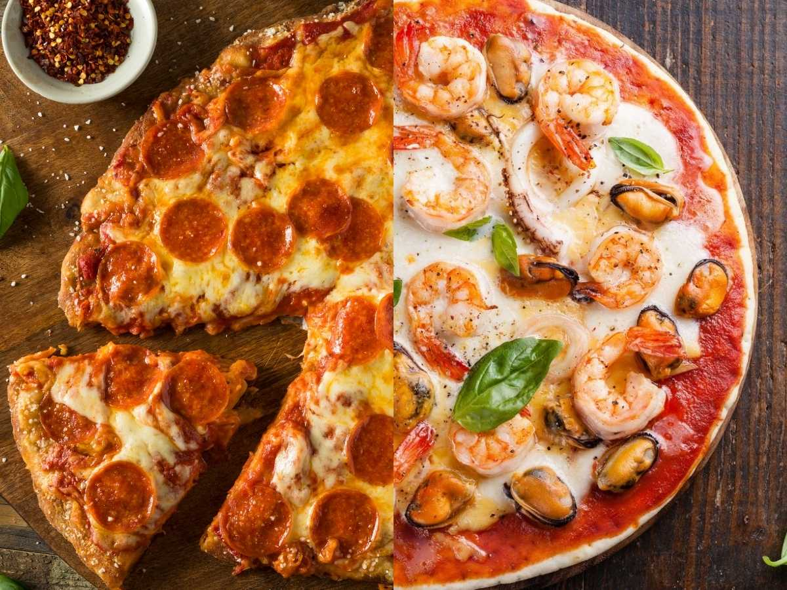

Pizza

Descripción
La pizza es un plato tradicional italiano que ha conquistado el mundo con su deliciosa combinación de masa, salsa, queso y diversos ingredientes.
La base de la pizza es una masa de pan suave, que se prepara mezclando harina, agua, levadura, aceite de oliva y sal,
y se deja reposar para que fermente y aumente su tamaño. Una vez que la masa está lista, se extiende sobre una superficie plana formando un círculo o la forma deseada,
y se cubre con una capa de salsa de tomate, que puede ser simple o condimentada con hierbas como orégano y albahaca.
A continuación, se agrega una capa generosa de queso, típicamente mozzarella, que se fundirá perfectamente al hornearse, creando esa textura suave y estirable.
La pizza se puede personalizar con una amplia variedad de ingredientes como jamón, champiñones, pimientos, aceitunas, anchoas, entre otros.
Una vez que los ingredientes están sobre la masa, se hornea a alta temperatura en un horno precalentado durante unos 10-15 minutos,
hasta que la masa esté dorada y crujiente y el queso burbujeante. Al sacar la pizza del horno,
se puede agregar un toque final de hierbas frescas o un chorrito de aceite de oliva, y se sirve inmediatamente para disfrutar de su sabor fresco y delicioso.
Ingredientes
- 250 g de harina de trigo
- 150 ml de agua tibia
- 10 g de levadura fresca o 1 cucharadita de levadura seca
- 1 cucharada de aceite de oliva
- 1 cucharadita de sal
- 150 g de salsa de tomate
- 200 g de queso mozzarella rallado
- Ingredientes al gusto: jamón, champiñones, pimientos, aceitunas, pepperoni, etc.
- Orégano y albahaca al gust
- Aceite de oliva para rociar (opcional)
Pasos para su elaboración
- Prepara la masa: En un bol grande, mezcla la harina con la sal.
Disuelve la levadura en el agua tibia y agrégala a la harina junto con el aceite de oliva. Amasa hasta obtener una masa suave y homogénea.
- Deja reposar la masa: Cubre el bol con un paño limpio y deja reposar la masa en un lugar cálido durante aproximadamente 1 hora, o hasta que haya duplicado su tamaño.
- Precalienta el horno: Precalienta el horno a 220°C (430°F) para que esté bien caliente cuando pongas la pizza.
- Forma la base de la pizza: Amasa la masa nuevamente y estírala con un rodillo hasta obtener un círculo de aproximadamente 25-30 cm de diámetro.
Colócala en una bandeja de horno ligeramente enharinada o en una piedra para pizza.
- Añade la salsa: Extiende una capa uniforme de salsa de tomate sobre la base de la pizza.
- Coloca el queso: Agrega el queso mozzarella rallado sobre la salsa.
- Añade los ingredientes: Coloca los ingredientes adicionales de tu elección (jamón, champiñones, pimientos, etc.) sobre el queso.
- Hornea la pizza: Lleva la pizza al horno y hornea durante 10-15 minutos, o hasta que la masa esté dorada y el queso esté burbujeante y dorado.
- Sirve y disfruta: Saca la pizza del horno, añade orégano o albahaca fresca si lo deseas, y sirve caliente.